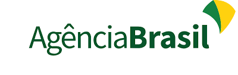

O que é mídia oficial?
Mídias oficiais são canais de comunicação confiáveis e regulados que seguem normas éticas e legais para divulgar informações. Exemplos incluem emissoras públicas como a TV Brasil e agências como a Agência Brasil, além de veículos renomados como jornais e portais de grande credibilidade.
Por que a mídia oficial é importante?
No mundo atual, onde a desinformação e as notícias falsas estão em alta, confiar em fontes oficiais é essencial para tomar decisões informadas e contribuir para uma sociedade melhor. Informações precisas e verificadas ajudam a combater rumores e a promover segurança da informação.
Exemplos práticos
Campanha Vacinação contra a COVID-19: Durante a pandemia, canais oficiais foram cruciais para divulgar calendários de vacinação e combater mitos sobre as vacinas.
Atuação da Juventude: Jovens utilizando redes sociais para espalhar informações confiáveis, citando fontes oficiais como portais governamentais.
Mulheres na Política: Programas de rádio e TV como "Mulheres no Poder" destacam conquistas femininas e incentivam o engajamento político das mulheres.
Como evitar desinformação?
- Verifique a fonte da informação.
- Confirme a notícia em veículos confiáveis.
- Evite compartilhar conteúdo sem checar a veracidade.
- Use plataformas oficiais para se informar.
Sobre o grupo
Este blog foi desenvolvido por:
- Nathalia Vespaziano
- Hanna Gabrielly
- David Souza
- Maria Ellen